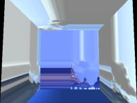

Unreal Mapping FAQ
This FAQ is for the UT2004/UT2003 Editor, UnrealEd 3. See Unreal Mapping FAQ (UT) for the old UnrealEd 2 FAQ.
Got a question that isn't covered here? Add it to the list (at its appropriate place) and leave the answer out. Somebody else will fill it in. Alternatively check the Help Desk for more advanced problems.
Note: This is a Mapping FAQ. See Category FAQ or Category Troubleshooting for other FAQ or troubleshooting pages on the Unreal Wiki.
Basics
- Where do I get a map editor for <insert name of Unreal engine game>?
- See UnrealEd Versions.
- Are there any map editors other than UnrealEd?
- Nope, it's UnrealEd or bust.
- UnrealEd isn't included in the UT2003 demo!
- That's right. Buy the retail version to get the editor.
- What patches are there for UT2003 and the editor?
- See UT2003.
- Where do I find tutorials for UnrealEd?
- Take a look around this site! Try...
- Mapping Lessons for simple beginner steps in mapping
- UnrealScript Lessons for making your first easy mutators
- Category Tutorial will give a full list of all tutorial pages.
- You'll find other sites listed on External Links
Crashes and Other Problems
Crashing
General Crash Tips:
- Save often. UnrealEd is finicky and not the stablest environment. You can set up autosave by opening the advanced options property editor in the view menu, and expanding the Editor\Advanced tab. The AutoSave and AutoSaveTime properties control level autosaving.
- After UnrealEd crashes ensure you rebuild the level completely.
- It has been suggested that quitting the editor before testing a level can add to the stability of UnrealEd and UT2K3.
- Use autosave to save your map periodically. Autosave information can be found here: UnrealEd Advanced Options.
- There's some known issues with UnrealEd and Windows 98/ME. The stability of the program is reduced the longer you run it (tarquin reports getting about 30 minutes out of it at a time). Symptoms of this problem are "critical errors", "runtime errors", or "illegal operations". The only way to fix this is to reboot and keep trying.
- UnrealEd won't start, and instead gives an error dialog about 'MSVCP60.dll' missing
- This is a problem on any Windows pre-XP with UnrealEd on UT2004 v3270 and later. [Google Search] for MSVCP60.dll. You can just shove the file in Base Directory\System.
- UnrealEd crashes when I try to start it
- on Windows 98/ME ? Download the [Windows 98/ME patch] from the official [Unreal Technology] page. Patching UT2003 to build 2136 also fixes this problem. (Don't apply the Windows 98/ME patch after patching to build 2136.)
- If you see WM_BROWSER_DOCK in the crash history, try going in Unrealed.ini and changing Docked=1 to Docked=0 under [Texture Browser], [Sound Browser], etc.
- UnrealEd crashes when I try and extract all of the UnrealScript sources.
- That's a bug which is partly fixed with the UT2003 patch build 2136. But classes exported that way are incomplete due to an exporter bug; better download Epic's original sources from Class Tree.
- UnrealEd crashes when I try to build my map
- This happens occasionaly, sometimes it is caused by something easily fixed and obviously wrong with BSP (like you made a surface antiportal when you needed a zone portal). If this is not the case, it can often be resolved by copying every actor and pasting it into a new file. Note that unrealEd offsets everything when you paste it, so you might want to correct this to keep everything on major gridlines. Also removing lights is known to help.
- What if you change the build settings?
- UnrealEd crashes when I try to edit the visibility of terrain in the terrain editing mode
- This needs a response.
Rescue Operations
- First Aid
If the latest version of the map you saved is messed up, try the following:
- If you had Autosave enabled, check your
Mapsfolder for maps whose names start withAuto.... - If you playtested your map from within UnrealEd recently, that version of your map is called
Autoplayin yourMapsfolder.
Look at the folder in Details mode and sort by last modified date, that will put the last save right at the top and easy to find.
- If you had Autosave enabled, check your
- I can't select any surfaces (textures in the 3D view) and the right mouse click doesn't do anything
- Try...
- turning off anti-aliasing.
- turning off anisotropic filtering.
- pressing S. (this toggles visibility of the selection highlight: see Viewport Caption Context Menu for more.)
- All the viewports are white when I start UnrealEd. How do I get them back?
- That's an old bug. Do UnrealEd Main Menu → View → Viewports → Configure → OK to fix it.
- UnrealEd shows up with a "window creation error" when I start it. What's wrong?
- You have to restart your computer because system resources are too low (below 50%). To see how much system resources you have, right-click on My Computer and select Properties. On the performance tab, it will say how many system resources you have.
- None of the resource browsers (actor browser, etc.) are accessible.
- This appears to be generally caused by the browsers being located off the screen. To get them back onto the visible portion of the screen, open one of the browsers. The window focus will change to the window that you cannot see. Press ALT-SPACE, then M to select the move option from the mini menu that's a part of every window. (If you are using a non-english version, click the icon in the top left of any window to see the menu and the appropriate hotkey.) You can then use the keyboard arrows or the mouse to move the window until you can see it. When I had this problem, the window was located just off the right edge of the screen.
- My map suddenly takes a lot of time to load/light and moving this static mesh takes several minutes!
- Normally this happens after you add a large (in dimensions or over ~20,000 triangles) static mesh into map. You might also notice that the SetDynStreams in the Hardware section of the STAT console command is several milliseconds. The solution is to either set bCollideActors property to false for this large static mesh or add a simplified collision shape. See Static Mesh Modeling for more or static mesh collision.
- When I start unrealEd, the buttons in the toolbox window (the one on the left) are blank. they don't have icons. WTF?
- This could be because you have misplaced or deleted your editorres folder located within the System folder of all Unreal games.
- I got a black wall in my map, but there's a light in front. When I move light i can see the lighning but when i rebuild the wall became black
- I'm not sure what causes this, but it can be fixed by moving the BSP a little bit in any direction.
See UnrealEd Bug List for more.
Packages
- How do I share my level with others without sending all of the texture and mesh packages?
- See MyLevel.
- How do I add packages to be loaded at startup?
- This is useful if you want to have access to the actors your mod uses, or if you're always using the same resource packages. Add the line "EditPackages=MyPackageName" to the [Editor.EditorEngine] section of the game ini file (the exact section may change with some games – look for similar lines).
- How can you determine what packages are used in a map? I have a map that's failing to load but I don't know what's causing the problem.
- Use UT Package Tool to extract a list of used packages.
- Examine View → Log in UnrealEd and read the last log message - it will tell you what package couldn't load.
- Can static meshes be used to create the boundaries of zones or must zones always be created with the zone portals touching BSP geometry rather than static meshes
- Only brushes that aren't Volumes can be used for that.
- When I close UnrealEd I see a dialog box message "Package # Has Changed, Save It Now?"
- We think it's just a UnrealEd bug. Say "no" and don't worry about it.
- I've changed a static mesh/sound/etc in my level, but when I next load/play the level, it contains an old version of the mesh/sound/etc
- This problem may occur if your various static mesh, sound, etc packages have the same name (excluding the .usx, .uax etc extension) – see Package naming. Of course, you also may have forgotten to save your mesh/sound/etc packages after changing them.
- When I load my level in the editor, it says it's missing a static mesh/sound/etc which I put in it last time I edited the level
- Again, this may be a problem with packages having identical names (excluding extension) – see Package naming. Or again, you may have forgotten to save the relevant mesh/sound package after changing it.
General
- Can I have dynamic day/night switching in my map?
- Yes, but the Hell if I know how!

You could probably have a "sun" lightsource and a "moon" lightsource and a mover to blank out one or the other? DodgyJon.
- What is the player cap in a UT2004 map or mod? Can I override the 32 player limit?
- My screen gets much brighter when UnrealEd starts
- That is normal. UnrealEd uses the same gamma correction setting as the game itself. To change the level, look under UnrealEd Advanced Options. To start UnrealEd with no correction at all, make a shortcut with "UnrealEd.exe -nogamma".
- What is the acceptable polycount in maps?
- About 50,000 for UT2003. See polycount.
- How can I turn an 831K map into a 6Mb monster at the click of a button?
- Simple – just re-build everything on the map. It seems to be the lightmaps that are responsible for most of the size increase although the bot path data has also been fingered as a contributing factor.
- (Merge this one with the above) Is there anything I can do to keep my UT2003 maps a reasonable size?
- Apart from using nothing but static meshes and terrain no. Once you get above around 200-300 brushes (normal adds, subtracts etc) your map size will bloat for no obvious reasons.
- How do I enable "bright corners" for surfaces?
- You can't. That feature has been removed from UnrealEd 3. See Surface Properties Window for the other flags.
- How are static meshes lit?
- What I know so far: for regular static meshes, the lighting is calculated per-vertex, and can be shadowed (per vertex) by BSP geometry. I assume, but have not confirmed, that this means the lighting is calculated at build time, and movers and other dynamically lit static meshes do not get this treatment.
- Can I use AutoCad for building meshes and such or am I stuck with Maya and that other 3D program?
- You can use Autocad or Inventor to create meshes as long as as you save your mesh in iges format, then you can import it into MAX 5 texture it then save it as a ase file which you can then import into UED 3 as a static mesh but if you texture your mesh with a texture that is not an original texture be sure to import it into UED3 or you will have to rassign new textures to your mesh.
- When I make static meshes in UED they appear extremely bright. How can I darken them?
- In the Display properties of the mesh, set bStaticLighting and bUseDynamicLights true.
- While making a skybox, the textures are smeared, and no manipulation of the alignment seems to fix it. The picture is of a simple 1024 cube. What is the solution?

This is caused by the textures you are using having their texture clamp mode set to TC_Clamp, rather than TC_Wrap (which is the more usual setting – see BitmapMaterial for more information). Basically, this means that they can't tile on surfaces larger than their dimensions. To fix this, the texture must be scaled to the exact size of the surface, and it must be aligned exactly to its edges (so for example if you have a cube of size 512, and a texture of 256, simply double it in the texture aligment properties, then make sure the texture is all aligned up properly). To do this, you can either experiment with the Texture Pan tool, or do the following:
- In the Surface Properties Window, switch to the Surface Alignment tab, select "Face", then type in the correct scaling so the texture will fit the surface exactly (so if your brush is a 1024 cube, and the texture is also 1024, leave the scaling at 1)
- Click "Align" to perform the alignment
- Switch to the Pan/Rot/Scale tab.
- Press the "1" button for each direction.
If that still doesn't fix it, look at the BSP cuts in Zone/Portal view. Clamping textures don't seem to cope well with cuts. If this problem is in your skybox, the move it away from the rest of the map to remove stray cuts.
- I've tried to create a fluid object, i can see the surface from above the water, but when i go under the water, i can see straight through it and all the terrain around, how can i fix this??
- Use a Shader or FinalBlend to make the texture two-sided.
Playtesting
See also playtesting.
- When I get in the game, all I and my bots do is die. What's up?
- You didn't rebuild. Do it.
- In UT2003 make sure that the KillZ level (ZoneInfo or Level Properties?) is set correctly. Spawning below that level causes instant death.
- It is possible you only have one playerstart, thus making a pile of bots and you spawn onto each other making a mass telefrag. (this no longer happens in UT2003)
- I've changed my brightness, contrast and gamma and am concerned that my lighting may appear incorrectly on other systems. If a user changes their settings, that's fine but I need a known baseline for setting up my lights.
- Your current settings are under ut2003/system/ut2003.ini, the default settings are under ut2003/system/default.ini. Defaults: Brightness=.800000, Contrast=.700000, Gamma=.800000
Helper Tools
- Is there a list of all the useful programs work with or around UnrealEd?
- The Wiki holds a list of Applications.
- Where do you create static meshes?
- These can be made from CSG geometry, but the best way is with Maya. Maya PLE is bundled on the third CD-ROM and must be installed separately.
New from Unreal Tournament?
Do you still work with UnrealEd 2 in your sleep? Confused by the new stuff?
- Arg! What's a hardware brush? What's a static mesh?
- A non-animated mesh with per-poly (or simplified per-poly) collision that is cached in video memory. See Hardware Brush for details.
Comments
StarWeaver: Ok, I'm not sure if I'm bringing this up in the right place, but this is where we're told that Bright Corners no longer exists in 200x, and this also goes with this section on coming from UT99. There needs to be something in here about working around the lack of bright textures. I've been beating my head against this problem all day; I've got a ceiling I'm trying to make out of a flattened arch shape from the 2d editor and it's got dark banding in the lightmap between each face.
I've searched around the forums and the wiki and the possible solutions I've come up with are:
- Use a static mesh instead (It's the Way of the Future.) This is probably what I'll end up doing, but it makes it harder not only to do dramatic lighting effects but to work with the texture selection / manipulation in the editor, so I'll be waiting until I'm done with the texturing and layout.
- Use dynamic lighting. I know this will work, because every time I modify a lightsource in the editor the preview looks great before I rebuild the lighting, but it also won't work right with shadows, and if you have any regular light source shining on the surface it will get some of the shadow effect.
And for the record, here's some things that DON'T help, at least in my case:
- Any of the surface flags that we have in UT2004.
- Changing the lightmap quality in any fashion.
- Creating the brush as an addition vs a subtraction or as a 2d-shape-editor extrusion vs a modified basic cylinder or as solid vs semisolid.
- Adding multiple lights in different formations and at different distances or changing any of the settings except bDynamicLight.
- Setting the PolyFlags on the brush to 548622 or whatever used to correspond to Bright Corners in the older engines.
- Transforming the brush to a static mesh dosn't work even for a temporary fill-in while building with a 2048-long brush, because there just aren't enough vertexes.
This problem is really starting to bug me, since it feels like the devs took out a feature designed to work around a bug or issue with their lighting raytracer without actually fixing the raytracer, and I'm really having a hard time comprehending why such a change was made. In any event, I feel there should be a page or section on dealing with these lighting glitches, but it could use more information than I can gather in an afternoon.
Related Topics
- Topics on Mapping
- Mapping Lessons
- UnrealEd Interface – full reference for windows, menus etc
- Unreal Modeling FAQ
- Map Build Errors
- Troubleshooting pages:
Category Mapping
Category FAQ
Category Troubleshooting